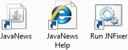

JavaNews contains a couple of items that you may want to access on a regular basis. Firstly the application itself and, secondly, the help system. Both of these items can be found in the installation directory. The main application is a file called JavaNews.jar and can be run by double-clicking on the file. You can create a shortcut to the file and place it within the start-menu or desktop as needed.
If you require a link to be included to the help system then create a shortcut to the using.html file located in the HTML\Help\ directory within the JavaNews directory.
If you plan on using JNFixer then you will also need to create a shortcut to the Run JNFixer.bat file.
